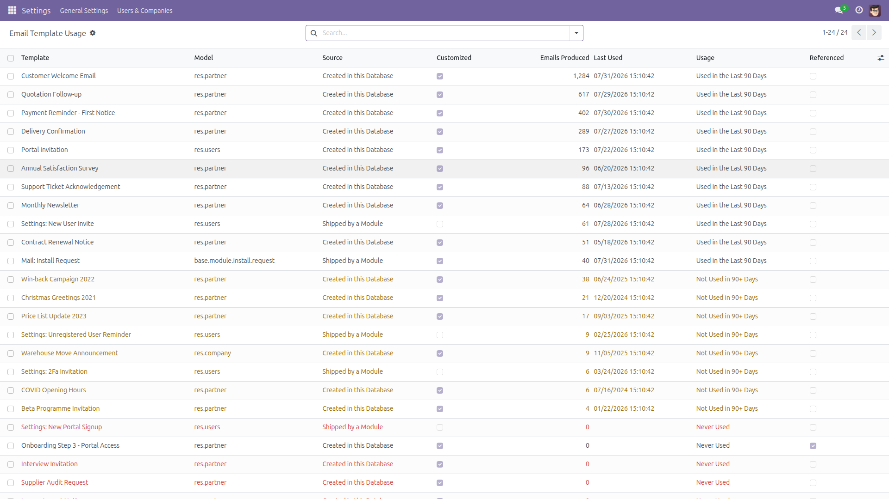
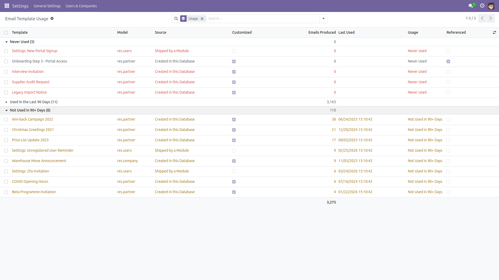
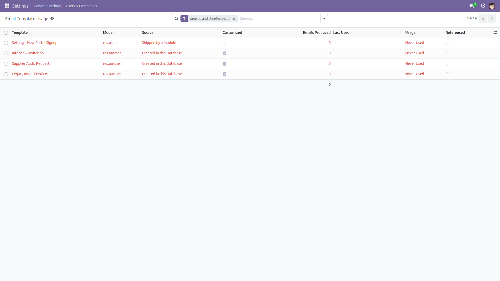
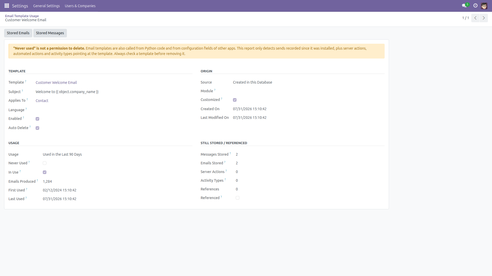

See which email templates are actually used — and which ones nobody has touched in years.
A database that has been live for a while ends up with dozens of email templates, and nobody can tell which ones still matter. Odoo cannot tell you either: core keeps no link at all between a sent email and the template that produced it — neither mail.mail nor mail.message has a template field, on any version from 14.0 to 19.0.
This module adds that link, records every send as it happens, and turns it into a read-only report: one line per template, with how many emails it produced, when it was last used, whether it was customised since installation, and whether an automated action points at it.
Free and open source (LGPL-3), Odoo 14.0 through 19.0.
mail only. No cron, no scheduled job, no outgoing traffic, nothing to configure.write() would move mail.template.write_date on every single send and destroy the "customised since installation" signal the whole report is built on.
The module adds two fields to your database: a read-only Source Email Template link on mail.mail and on mail.message. Both are set to empty if the template is later deleted; no existing field is modified.
Honest limitations.
Counting starts at installation. Odoo stores nothing that ties an old email back to its template, so sends that happened before you install this module can never be counted — there is no history to recover. The First Used column tells you when tracking actually started to see each template.
"Never used" is not a permission to delete. Templates are also called straight from Python code, from the Python part of server actions, and from configuration fields of other apps (stage-change emails, event registration, website and portal settings). Of those, only ir.actions.server and activity types are detected here. Always check a template before removing it — the report says so on every form.
Send detection covers mail.template.send_mail() (and send_mail_batch() on 17.0+), and the Send Message / mass-mail composer when a template is selected in it. A module that renders a template by hand and builds its own email is not detected, and Odoo's Email Marketing app sends from its own mailing records rather than from mail.template, so those campaigns are outside this report.
The counters live on the template row: delete a template and recreate it and its history starts again from zero. The Customized flag compares the template's write date with the install/upgrade date of the module that ships it, so upgrading that module re-applies its own version of the template and clears the flag again; a template created in this database is custom by definition.
Access is restricted to the Settings group because the report exposes every template in the database. Its menu sits under Settings → Technical → Email, next to the templates themselves, and Odoo only shows the Technical menu in developer mode.
On 14.0 and 15.0 the Enabled column is always ticked: mail.template only gained an active field in 16.0, so no template can be archived on those series.

Every email template on one line: the model it renders on, where it came from, whether it was customised, how many emails it produced and when it was last used. Red rows have no recorded use and nothing pointing at them.

Grouped by usage — used in the last 90 days, not used for 90+ days, never used — so you can see the shape of the problem before touching anything.

The shortlist to review: no recorded send, and no server action or activity type pointing at them. A starting point for a cleanup, not a delete list.

One template in detail — origin, customisation, usage, stored mails and references — with buttons to open the emails and messages it produced.
mail_template_usage_report folder into your addons path (or install it from the Apps store).mail, which every Odoo database already has.mail.mail and mail.message) and creates the report view. Nothing else in your database is modified.The same features on every supported series (14.0 – 19.0). Two differences come from Odoo itself: mail.template has no active field before 16.0, so the Enabled column is always ticked on 14.0 and 15.0; and send_mail_batch() only exists from 17.0, so only that entry point is hooked on 17.0 and later.
Questions, bugs or feature requests?
Email f.ashraf.dev1@gmail.com — I read and answer every message.
License: LGPL-3 · Source on GitHub · Issues and contributions welcome.